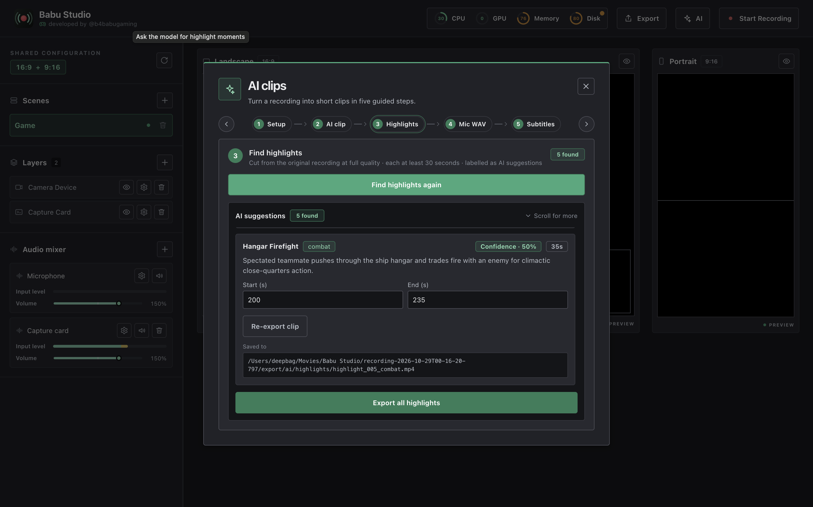

Separate masters
Capture-card video, webcam, game audio and microphone each land in their own file under master/, synced on the capture clock. The originals are never modified by exports.
Babu Studio is a macOS recording studio for gamers and creators. Capture every source separately, then turn a full recording into short clips in five guided steps — highlights, mic-to-WAV, and multilingual subtitles powered by muse-voice-transcribe-1.0 and muse-spark-1.3.
One popup, one visible step at a time. Real percentages everywhere — upload bytes, FFmpeg render time, per-clip export progress. Nothing is faked.
Pick a recording and paste your Model API key. The key never leaves the main process.
Render a compact 360p file plus a 30-second short clip, composed from your exact scene.
Meta finds the best moments with confidence scores. Export one clip or all — each with a live progress bar.
Convert the microphone track to 16 kHz mono microphone.wav, the standard shape for speech AI.
Transcribe once, translate into up to 78 languages, save one .srt per language — each with its own player.

The AI is only half the story. Every source is captured separately and stays untouched.
Capture-card video, webcam, game audio and microphone each land in their own file under master/, synced on the capture clock. The originals are never modified by exports.
Landscape and portrait placements are adjusted independently, then rendered to horizontal.mp4 and vertical.mp4 with your mixer levels baked in.
Upload shows real bytes. Exports show real FFmpeg time. Analysis shows stage labels, never invented timestamps or percentages.
Each recording keeps master/ sources apart from export/ renders, with AI files grouped under export/ai/ — subtitles and highlights in their own folders.
Two hosted models do all the understanding. Everything else runs on your Mac.
Video → highlights
Watches the compact ai-360p.mp4 and returns the best moments with confidence scores, titles, and reasons. Clamped to the real take duration, padded to a watchable minimum — never invented.
Speech → text
Transcribes microphone.wav in one request. Segment timestamps come only from the API response — the app never invents them. A compliant WAV uploads directly; anything else is converted to a temporary file while the original is preserved.
English → 78 languages
Translates every transcript turn while preserving segment IDs and timestamps, then formats the result as .srt. Failures arrive as toasts with the surviving languages still saved.
Spoken dubbing waits on Meta releasing a text-to-speech model — the Model API returns text only today, so the app ships subtitles, not synthetic voices.
macOS only. Apple Silicon and Intel builds. FFmpeg rides inside the app — nothing else to install.
Pick the build that matches your Mac. Unsure? Apple menu → About This Mac: “Chip: Apple M…” means Apple Silicon.
Open the .dmg and drag Babu Studio into Applications.
The app isn't notarized, so macOS asks once. Right-click → Open, or System Settings → Privacy & Security → Open Anyway.
Open the AI popup, step 1, and save your key from the Meta developer portal. Recording works without it; AI steps need it.
Free installers from the GitHub releases page.
Babu-Studio-arm64.dmg · M1 and later
Download .dmgBabu-Studio-x64.dmg · 64-bit Intel
Download .dmgPrefer the full list? See all releases or the download page.